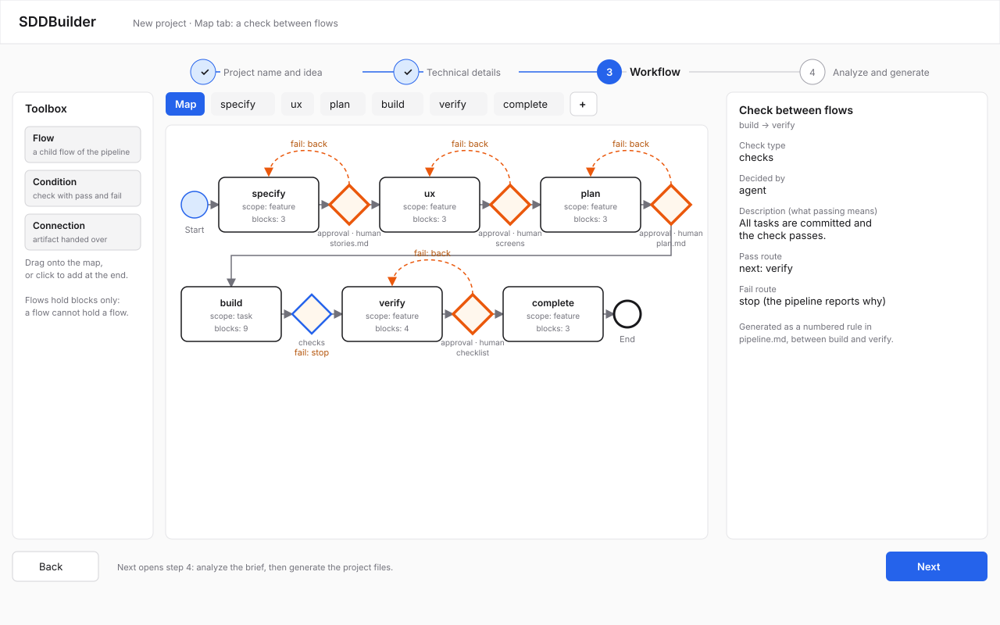
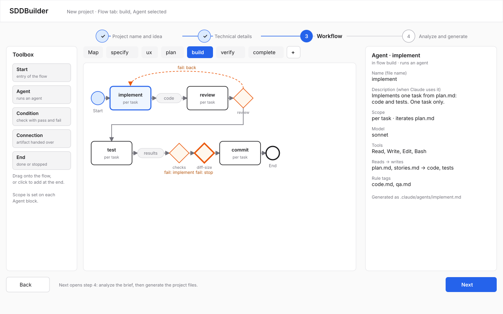
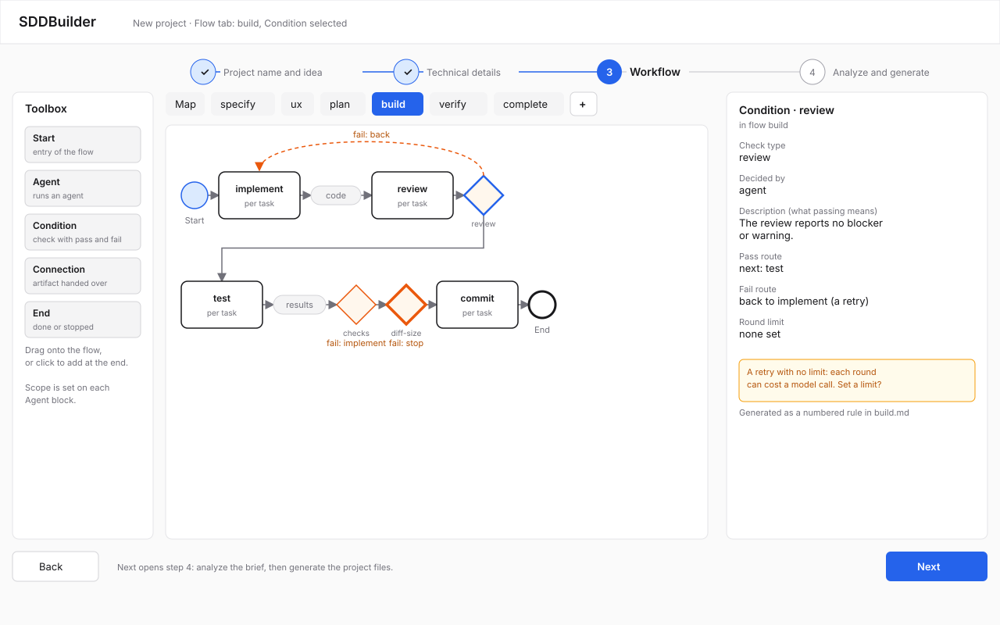
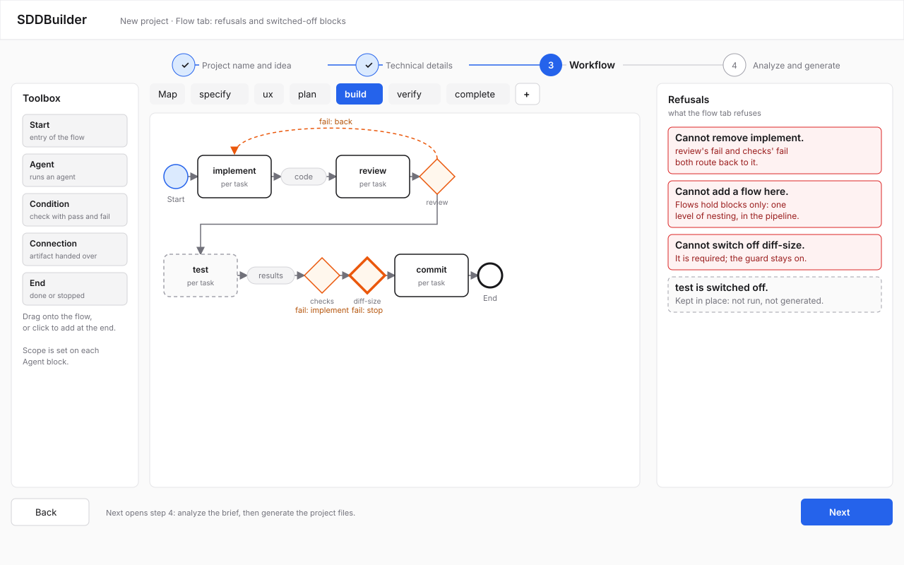

01 The pipeline on the Map tab
Six flows in order (specify, ux, plan, build, verify, complete); the approvals and the check between them are gates on the arrows.

Step 3 of the wizard. The pipeline is the Map tab: its flows in order, with the gates and checks between them. Each flow has its own tab with its blocks. Wireframes only; read screens.md for the legend, the states and the open points.
Six flows in order (specify, ux, plan, build, verify, complete); the approvals and the check between them are gates on the arrows.
The check between build and verify: its decider, its description and its routes.

The build flow with the implement agent selected: scope per task, model, tools, reads and writes.

The review condition in the build flow, with a round-limit warning.

A referenced block cannot be removed; a flow cannot hold a flow; a required gate cannot be switched off; a switched-off block stays in place, dashed.
